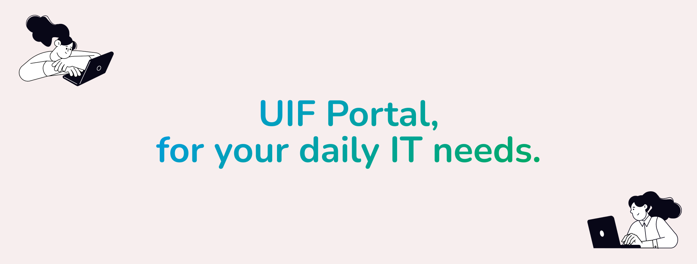
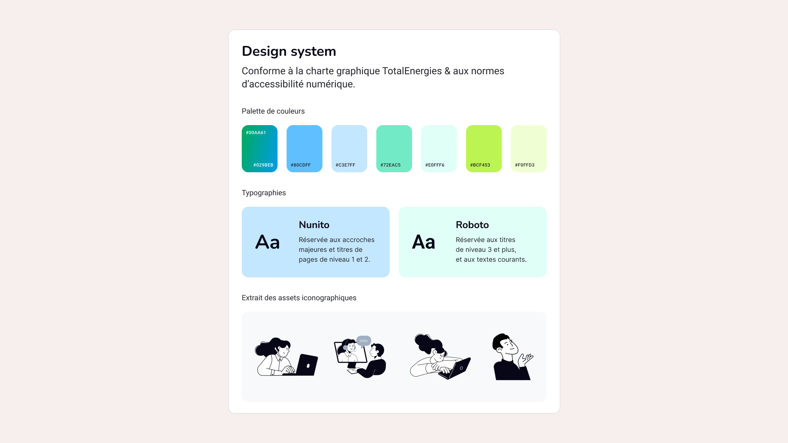
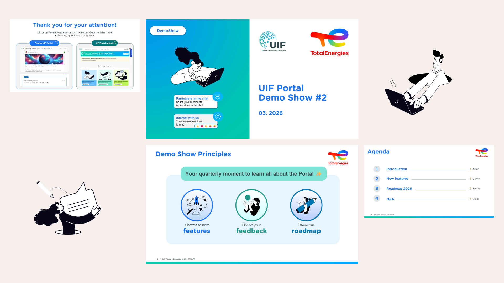
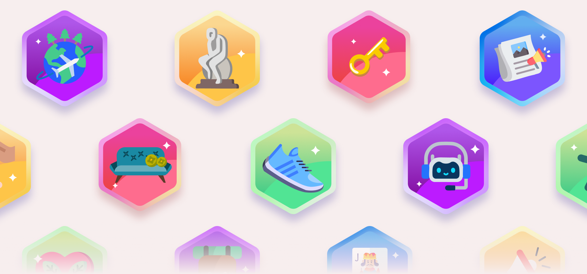
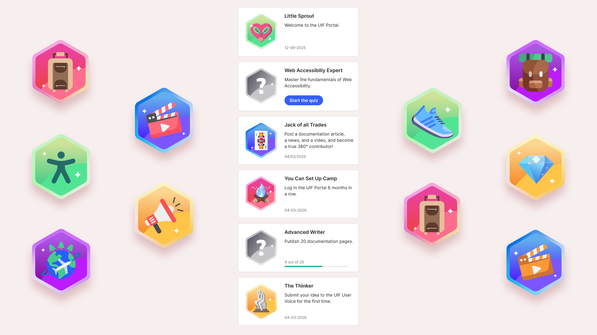

Le Portail UIF est une plateforme interne développée chez TotalEnergies pour centraliser l'accès aux produits et services IT de la division.
Il est aujourd'hui utilisé par plus d'un millier d'utilisateurs chaque mois et constitue un point d'entrée essentiel pour l'environnement digital interne.
Ce projet a été primé Meilleur projet UX lors d'un séminaire divisionnel.
Au sein d'une équipe agile composée d'une Product Owner, de développeurs et d'un UI Designer,
j'ai piloté la création de l'identité visuelle du Portail UIF ainsi que sa déclinaison sur l'ensemble des supports de communication associés.




